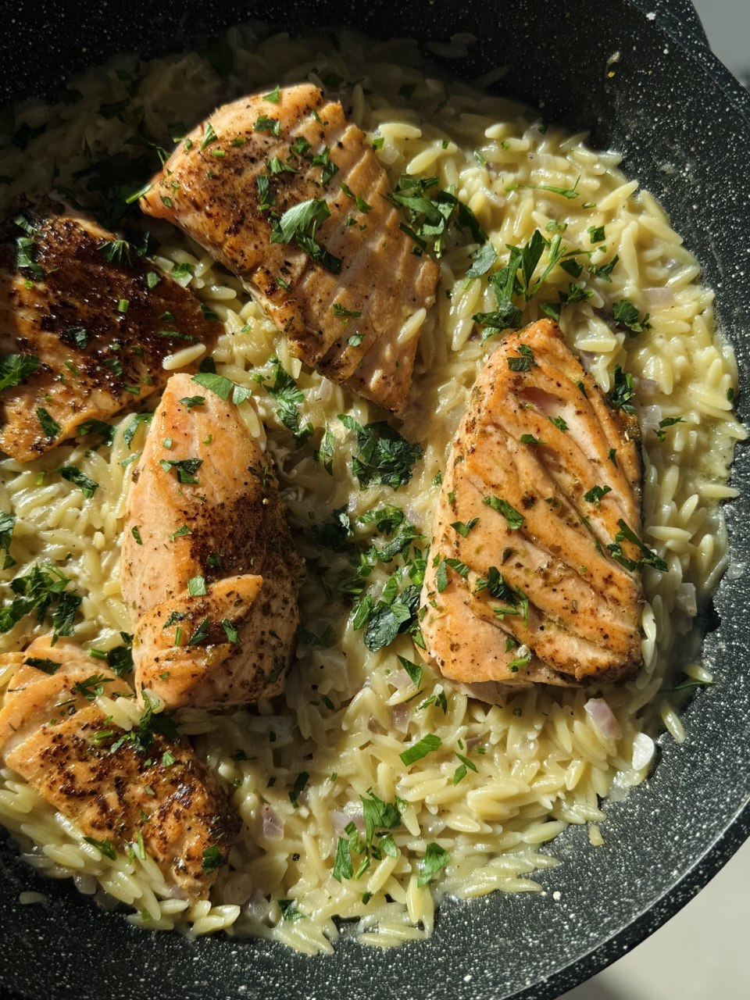

Шаг 1
Подготовьте продукты
Лук нарежьте мелким кубиком, чеснок измельчите. Лосось обсушите и разделите на крупные кусочки, лимон натрите на мелкой тёрке.

на 4 порции
готовим вместе
Шаг 1
Лук нарежьте мелким кубиком, чеснок измельчите. Лосось обсушите и разделите на крупные кусочки, лимон натрите на мелкой тёрке.
Шаг 2
В глубокой сковороде разогрейте оливковое масло. Обжарьте лук до мягкости, добавьте чеснок и орзо, перемешайте, чтобы крупинки покрылись маслом.
Шаг 3
Влейте горячую воду или бульон небольшими порциями и готовьте орзо до мягкости. Добавьте сливки, пармезан и лимонную цедру, посолите и поперчите.
Шаг 4
Выложите в сковороду лосось и шпинат, аккуратно перемешайте. Накройте на минуту, затем разложите по тарелкам и добавьте немного лимонного сока.
Источник: example.com/recipe/orzo-salmon
Это действие нельзя отменить.